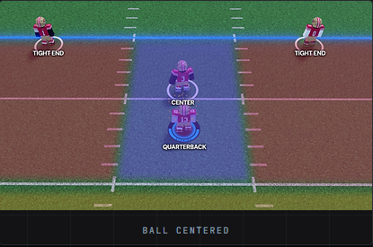
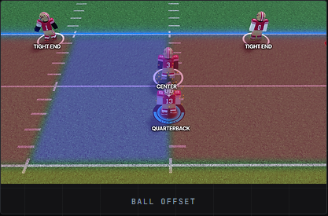
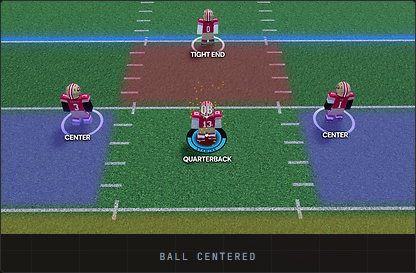
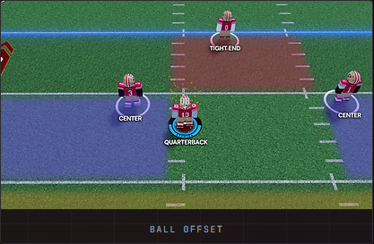
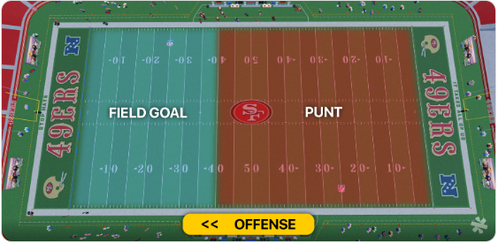

Atlantic Conference
View Atlantic Conference teams and standings.

Competition. Community. Legacy.
The biggest stage in the Elite Football Federation.

EFF competition is split between two conferences.
View Atlantic Conference teams and standings.

View Pacific Conference teams and standings.
Updates automatically from the EFF Google Sheet.
| Rank | Team | Rec | Conf Rec | PF | PA | PD | Streak |
|---|---|---|---|---|---|---|---|
| Loading standings... | |||||||
| Rank | Team | Rec | Conf Rec | PF | PA | PD | Streak |
|---|---|---|---|---|---|---|---|
| Loading standings... | |||||||
Seeds update automatically from the live standings. The top six teams from each conference qualify.
Automatically generated from the standings sheet.
| Loading stats... |
Pick a week to view that week's games and scores.
Championships, playoff runs, award winners, and all-league teams from every completed EFF season.
Season 1 champions after defeating the Houston Hornets in the EFF Championship.
Finished the regular season at 10-0 and entered the Pacific bracket as the No. 1 seed.
Atlantic champion Miami Sunshines defeated Pacific champion Houston Hornets for the title.
Everything you need to run and play an official EFF game, from start-of-game procedure through penalties, special teams, fumbles, overtime, and league operations.
Force start is 15 minutes after the scheduled game time.
Both head coaches are responsible for obeying the rulebook and going by the referees call.
Formation-specific requirements are detailed in the two sections below.
Called when a tight end, in either formation, blocks more than 5 yards behind the line of scrimmage.
Called when a defensive player lags and sacks the quarterback.
Called when a wide receiver intentionally blocks a defender:
It is not TMB if the wr blocks backwards. TMB can only be called if the quarterback throws the ball after the block — the flag will not count if the QB runs the ball.
This flag is mostly a judgment call — if a receiver isn't within about 15 yards of the ball, it will be considered grounding, unless the wr and QB clearly had a miscommunication or the wr cut away.
Called when a center rolls out past the line of scrimmage, regardless of formation, before the ball is thrown.
Called when either team has 10 players on the field after the hike.
Called when a wr/te steps out of bounds or on the white border before the ball is thrown.
An illegal formation is called in the 1C / 2TE formation when:


An illegal formation is called in the 2C / 1TE formation when:


No fake field goals or punts are allowed.
You must punt if the LOS is within your own endzone to the 50 and it is 4th & 8 or longer. Not applicable under 2 minutes in the 2nd or 4th quarter.

Only specific players are able to fumble:
If the game shows a fumble on-screen after the quarterback is hit by a defensive end, but something else actually occurs (such as a sack or a throw), the play stands as what the game ruled it — completion, interception, or sack.
2-point conversions and PATs are all on the table.
Once a team is winning by 40 or more points, mercy applies and the referee must end the game instantly.